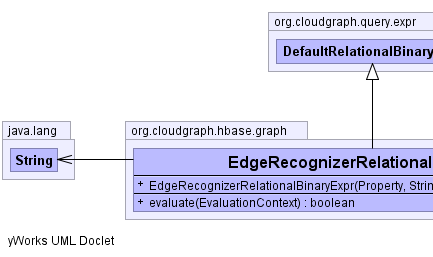
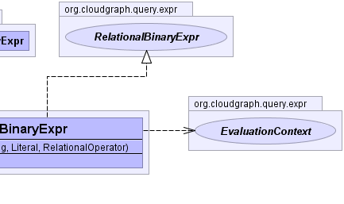

public class EdgeRecognizerRelationalBinaryExpr extends DefaultRelationalBinaryExpr implements RelationalBinaryExpr
RelationalBinaryExpr implementation which uses a specific
evaluation context to locate
or recognize a given sequence based column qualifier within
the context of the expression.EdgeRecognizerContext|  |  |
literal, operator, property, propertyPath| Constructor and Description |
|---|
EdgeRecognizerRelationalBinaryExpr(Property property,
java.lang.String columnQualifierPrefix,
Literal literal,
RelationalOperator operator)
Constructs an expression based on the given terms
and column qualifier prefix.
|
| Modifier and Type | Method and Description |
|---|---|
boolean |
evaluate(EvaluationContext context)
Returns a "truth" value for the expression using a specific
evaluation
context to locate
or recognize a given sequence based column qualifier within
the context of the expression. |
getLiteral, getOperator, getProperty, getPropertyPath, toStringaccept, createPropertyPath, getLeft, getRight, setLeft, setRightclone, equals, finalize, getClass, hashCode, notify, notifyAll, wait, wait, waitgetLiteral, getOperator, getProperty, getPropertyPathaccept, getLeft, getRightpublic EdgeRecognizerRelationalBinaryExpr(Property property,
java.lang.String columnQualifierPrefix,
Literal literal,
RelationalOperator operator)
property - the "left" property termcolumnQualifierPrefix - the qualifier prefix used
to evaluate the expression for a given context.literal - the "right" literal termoperator - the relational operatorEdgeRecognizerContextpublic boolean evaluate(EvaluationContext context)
context to locate
or recognize a given sequence based column qualifier within
the context of the expression.evaluate in interface Exprevaluate in class DefaultRelationalBinaryExprcontext - context to locate
or recognize a given sequence based column qualifier within
the context of the expression.EdgeRecognizerContextCloudGraph® is a registered trademark of TerraMeta Software, Inc. Copyright © 2014 - All Rights Reserved.